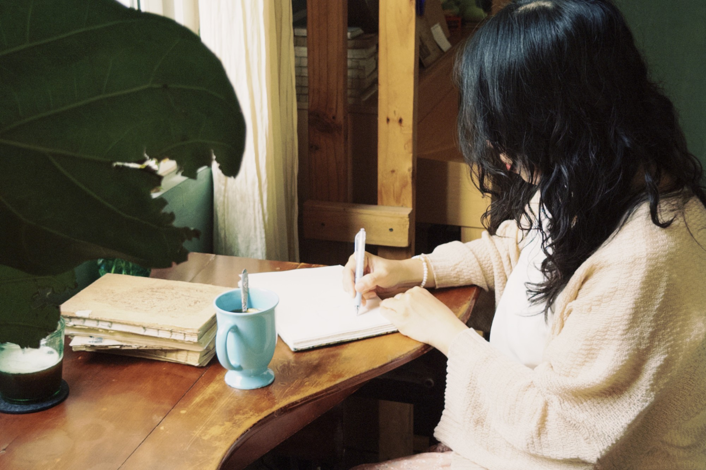

Một công việc đáng để gắn bó lâu dài sẽ không xuất hiện ngay lập tức
Đọc thư của James Clear một buổi sáng, và bốn câu hỏi giúp mình tìm ra công việc đủ vui, đủ nuôi sống mình và đủ giữ mình là chính mình.

Sáng nay, mở mail ra mình có đọc được thư của James Clear, tác giả Atomic Habits, có đoạn này mình thấy khá hay.
Một sự nghiệp tốt, một công việc đáng để đi đường dài thường có 4 yếu tố sau:
- Mình thích nó.
- Mình giỏi nó.
- Mình kiếm được tiền từ nó.
- Và mình được ở gần những người thú vị.
Nhưng cách hay nhất để tìm ra công việc trong mơ đó là đừng có vội hỏi: “Mình thích gì?”
Mà hãy bắt đầu ngược lại:
1/ “Mình muốn ở gần ai?”
Mặc dù ai cũng làm việc để kiếm xèng, ai cũng muốn có 1 mức lương cao nhưng sau bao năm thì mình nhận ra môi trường làm việc và con người quanh mình ảnh hưởng tới mình còn nhiều hơn cả công việc/mức lương mình đang làm.
Ở gần người tò mò, mình cũng dễ tò mò theo.Ở gần người siêng năng, mình cũng bớt lười đi.Ở gần người dở hơi đáng yêu, tự nhiên mình thấy đời đỡ căng thẳng hơn nhiều.
2/ “Ở gần họ, mình có thể làm việc gì có giá trị?”
Tiền bạc không đến từ sở thích đơn thuần. Tiền bạc đến từ giá trị mình tạo ra cho người khác, đặc biệt là những người mình muốn giúp đỡ và đồng hành.
Một vài câu hỏi đáng để suy ngẫm, ví dụ như:
- Mình có thể giúp họ giải quyết vấn đề gì?
- Mình có thể làm tốt vai trò nào trong cộng đồng đó?
- Mình có thể là người gắn kết, người tạo ra, người nâng đỡ hay người tổ chức?
3/ “Mình giỏi điều gì?”
Nhìn từ trải nghiệm thật, từ những lần làm thử, làm dở, làm sai chứ không phải chỉ ngồi nghĩ suông.
- Mình từng làm điều gì dễ hơn người khác?
- Điều gì khiến người ta hay tìm tới mình nhờ vả?
- Điều gì mình làm thấy nhẹ tênh trong khi người khác vật vã?
4/ Và cuối cùng, ngồi reflect lại xem trong tất cả những điều đó, điều gì làm mình thực sự thấy vui và hứng thú?
Niềm vui đôi khi nó không ồn ào mà nó có thể là một cảm giác mà có được khi mình kiên nhẫn làm một thứ nho nhỏ mỗi ngày, là cảm giác muốn học thêm 1 thứ dù chẳng có ai ép, là cảm giác mệt mỏi nhưng lại không thấy hối hận khi làm, là cảm giác sung sướng khi khách hàng gật đầu với thiết kế.
Công việc đáng để gắn bó lâu dài thông thường không phải là thứ mình chọn ngay từ đầu.
Mà là thứ mình tìm ra được sau một hành trình đủ lâu ở gần những người mình muốn ở cạnh, làm việc mình muốn làm, và dần dần thấy mình tốt lên từng chút một.
Chậm cũng được.
Dở cũng được.
Miễn là đừng ngừng hỏi mình những câu hỏi thật lòng, và viết reflection mỗi tuần, mỗi ngày và cố mỗi ngày một tí.
Mình tin, ai rồi cũng sẽ tìm thấy công việc đủ vui, đủ nuôi sống mình và đủ giữ mình là chính mình.
Mình viết những dòng này cũng để xác nhận lại xem có đúng thế không. Và ngẫm lại, quả thật, mình đã dành tới 6 tháng lận để quan sát đối tượng khách hàng mà mình muốn hướng tới, tìm ra thứ mà họ sẽ trả tiền cho điều mà mình giỏi hơn những người khác 🙂 Chưa dám kết luận điều gì, nhưng tạm thời thấy cũng ổn ổn và thấy những gì James Clear nói cũng hợp lý.